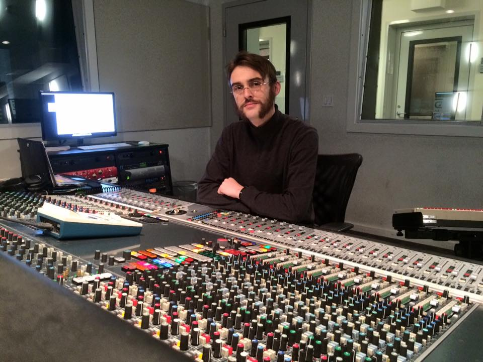

Hi there and welcome to my audio engineering home page! My name is Peter Daly and I recently graduated SAE Institute's Diploma Audio Engineering program. Please feel free to look around and check out my portfolio to hear and download audio files of projects I've worked on before!
I've had the opportunity to train using consoles such as the Presonus 16.4.2, Mackie1604, Audient ASP8024, ICON, Yamaha 02R96, Neve 88R and SSL 4000G+. Under a current internship I am building upon my 02R knowledge by working on a Yamaha DM2000 and outboard patching with 1073 Mic Pre's and 500 Series Bus Compressors.